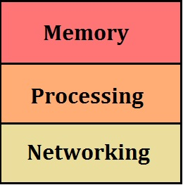

Before we get started with programming, its important that we know certain basic concepts. This will make us understand
the concept of programming in the proper way. So its better we start of with the basic layout or an overview of a computer.
The block diagram of a computer will give us a clear picture on how a computer basically functions.

From the above block diagram we can see that a computer basically contains three parts:
- Memory unit
- Processing unit
- Networking/Communication unit
Now lets discuss each unit briefly.
Memory Unit
Memory unit is the amount of data that can be stored in the storage unit. The storage capacity is measured in bytes. The memory unit plays a vital role in programming as all your code will be stored in this. Hence its essential that you program in an efficient manner as the space in your memory unit is limited.
Processing Unit
The processing unit contains three parts which are essential with respect to programming. The three parts are mainly:
- Code time- process which involves coding for an application.
- Compile time- process which checks for errors and creates an executable form of your code.
- Run time- process which executes/runs your program.
Networking/Communication Unit
Networking is the practice of linking multiple computing devices together in order to share resources. These resources can be printers, CDs, files, or even electronic communications such as e-mails and instant messages.These networks can be created using several different methods, such as cables, telephone lines, satellites, radio waves, and infrared beams. Without the ability to network, businesses, government agencies, and schools would be unable to operate as efficiently as they do today.